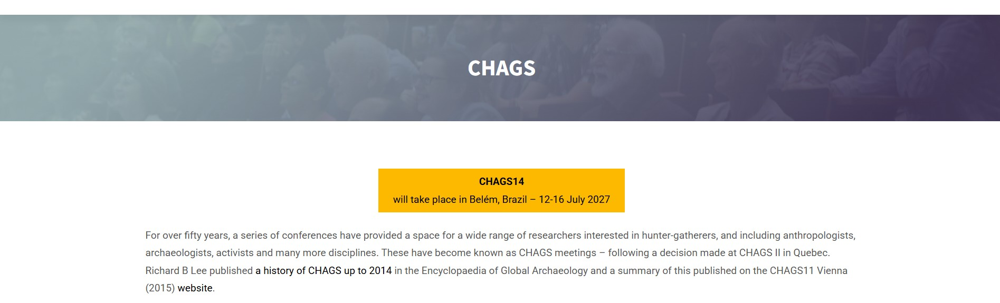

CHAGS 14
Still We Rise
Pesquisa, ensino e inovação sobre sociedades caçadoras-coletoras reunidos no coração de Belém - Pará, Brasil.

Conheça o portal oficial da ISHGR
Acesse publicações, diretoria e histórico completo da sociedade.
Um encontro global às margens do Rio Guamá.
A 14ª Conferência Internacional da ISHGR (CHAGS 14) consolida-se como o principal fórum global de pesquisa sobre populações tradicionais, ancestralidade e ecologia humana.
Com o tema central voltado à sustentabilidade e inovação social, o evento na Amazônia conecta a academia, lideranças e a sociedade civil para desenhar soluções estruturais colaborativas.
Pesquisa Global
Apresentações de ponta e estudos comparativos mundiais.
Inclusão
Tecnologias e metodologias sociais que aproximam saberes.
Sustentabilidade
Debates alinhados à preservação do território amazônico.
Conexão ISHGR
Construção de redes contínuas entre pesquisadores globais.
Mural de Notícias e Projetos.

CHAGS 14: Um legado de 50 anos chega a Belém
De 12 a 16 de julho de 2027, a capital paraense sediará a 14ª Conferência da ISHGR. Dando continuidade a um legado histórico, o evento reunirá pesquisadores e ativistas globais em um espaço inclusivo para debater o futuro das sociedades caçadoras-coletoras.

Abertura de Submissões em Fevereiro
O prazo para envio de trabalhos, pôsteres e propostas de rodas de conversa inicia em 15 de fevereiro de 2027. Acesse a Área do Participante para conferir as regras e formatos aceitos.
Quem realiza.
Apoio institucional e coordenação executiva da edição de 2027 em Belém.

Universidade Federal do Pará
Museu Paraense Emílio Goeldi
University of Nevada